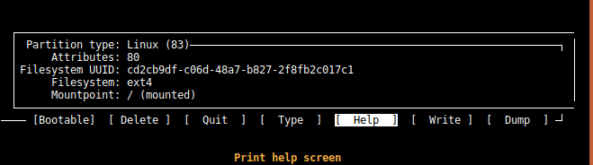
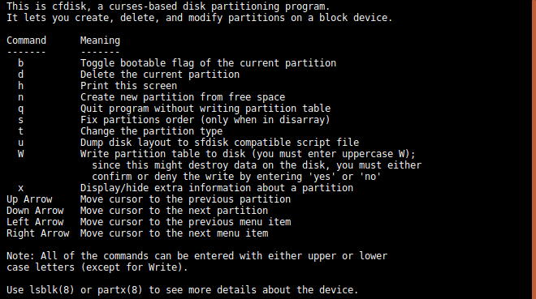
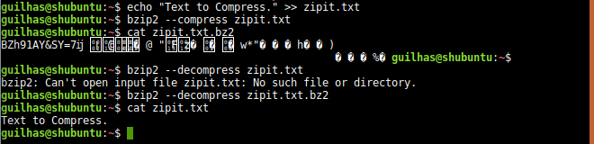

Bash Commands
alias
Very cool command. Used to create an alias of another command.
apropos
Used to search the manual page names and descriptions. This search is done by using keywords.
aspell
The interactive spell checker.
basename
Used to strip directory and sufflix from filenames. Much like .split() in python.
bc
Bash calculator, which i ended up breaking after some bad inputs. But the creator did say that error recovery is still very bad in the man pages. Anyways, good for quick calculations while in the command-line.
cal
Just a calendar
cfdisk
A cool GUI to display or manipulate a disk partition table. The default device is /dev/sda.
 bzip2
A block-sorting file compressor.
Curl
I'm learning about curl. Very powerful tool. I'm also going to talk about split and BeautifulSoup. Let's start with split.
Split
In this example, I start with a simple string, and what split can do to that string is, as the name says, split it. And you can do so simply but using .split() as I did in the beginning. But we can take this one step further. So let's say we want to grab whatever is in front of 'example'. We can do so buy spliting 'example' of the string and picking whats in front of it, hence the [1]. And that would be it. Now let's pick just the word phrase 'phrase'. Like previously, we get whats in front of 'example' but now we split twice. The last split is to remove the '.'

BeautifulSoup
This gets very useful when parsing specific text in a html page as we will see soon. So let's talk about BeautifulSoup. To use this you need to install the bs4 module. For this example i used the main page of Hack Forums and grabed the names of online users.
This code uses bs4 to grab specific tags like tbody and td. Also find_all() allows us to grab tags with a certain class. Bs4 does much, much more. In the end we use text=True to grab our names. We could have used split.


Running our code we can see the span tags and the final result the names. All of this output is done by our get_names() function.

Curl
So, what is curl? If we look at our man pages we get a pretty straight answser. Curl is a tool to transfer data from or to a server, using several protocols like HTTP FTP IMAP and many others. Curl offers proxy support, user authentication, SSL connections, cookies etc. Let's write a small script to get timings of connections. For this I'm running apache2 on localhost. Very easy to setup POST SCRIPT


To be updated...
Free
free - Display amount of free and used memory in the system
free displays the total amount of free and used physical and swap memory in the system, as well as the buffers used by the kernel. The shared memory column represents either the MemShared value (2.4 series kernels) or the Shmem value (2.6 series ker‐ nels and later) taken from the /proc/meminfo file. The value is zero if none of the entries is exported by the kernel.
Uptime
Checking permissions: ls -l
Here we see that the file (squid) is a directory, users (joji) can read, write, and execute but the group dip can only read and execute (r-x).
Here i created a new file and we can see that it is not a directory and that joji can only read and write so does the group also joji.
Some Linux commands
Append text to a file: echo "content" >>
Overwrite a file's content: echo "content" >
Redirect (append) standard output to a file: ls -la >>
View who is logged on: $who
View the last 10 lines of a file's content: tail -10
View the first 10 lines of a file's content: head -10
Compress a file in .tar: tar --create --file=archive.tar file1 or tar cf archive.tar file1
Decompress a file in .tar: tar xf compressed.tar